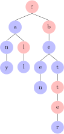
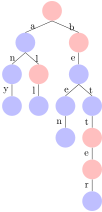

One undeniable fact about language is that mastering a language requires memorization of at least some words. Grammatical knowledge is what enables a native speaker to figure out possible sentence structures, but these structures have to contain words in order to produce an actual sentence of the language. A native speaker must have a rich vocabulary or, as linguists say, a (mental) lexicon. Guesses about how many words an average native speakers has stored in their lexicon vary widely, from 5,000 or 10,000 all the way to 50,000 and higher. Some of the disagreement is due to what one considers a word — are goose and geese different words? But another prominent source of disagreement is about what forms actually need to be stored. For example, there is no obvious need to memorize both glass and glasses because there is a productive plural formation rule in English that allows us to inform the second form from the first. For goose and geese, on the other hand, the plural form is irregular so a speaker probably would have to memorize both. Psycholinguistic research suggests that predictable forms are indeed not memorized, unless they are very high frequency so that storing them is computationally more efficient than constantly computing them on the fly.
Whatever the exact facts are, it is clear that a human has to store at least a couple thousand words in their lexicon. And a computer program that is written without the productive rules of word formation may need hundreds of thousands of entries in its lexicon. In fact, some English word lists for computer programs contain over 400,000 words, including various acronyms, proper names, and so on. This raises the question how such a long list can be stored efficiently. Let us first assume the simple case that a list is stored as, well, a list, and see why that isn’t feasible for humans and computers alike.
Mathematically, a word list is just a string over a fixed set of words. Usually word lists are ordered alphabetically, but this may not be true for humans: even if a speaker’s mental lexicon is just a list, it may be ordered by frequency, word length, the chronological order in which words were learned, or just completely randomly. But let us be as forthcoming as possible here and assume that the list is indeed ordered alphabetically. Then what could be possible downsides of storing a lexicon in this form?
The first one is retrieval speed. There has to be some mechanism of looking up a word in the list. For humans, retrieval time seems to be largely independent of vocabulary size. Whether you know 1,000 words or 10,000, it does not take all that long to figure out that be and woman are words of English. But with word lists, retrieval time should depend on vocabulary size.
# download a giant dictionary file
from urllib.request import urlretrieve
url = "https://raw.githubusercontent.com/dwyl/english-words/master/words.txt"
urlretrieve(url, "words.txt")
# read in file as string
with open("words.txt", "r") as words:
long_list = words.read()
# tokenize the string to get a Python list of words
long_list = long_list.split("\n")%%time
# now look up woman in a short word list; it doesn't take long
short_list = ["a", "is", "the", "woman", "zeal"]
print(short_list.index("woman"))%%time
# now look up woman in the long word list; it takes over 4000 times longer
print(long_list.index("woman"))So with lists as a hypothetical counterpart for a mental lexicon, average retrieval speed should decrease as the size of the lexicon grows. This does not seem to be the case, and even if it were true for humans it would not be smart engineering for a computer program.
Another downside of lists is just how redundant they are as a storage mechanism. Consider the words theory and theorize. The two strings share the prefix theor, but the way they are stored in the list no sharing is going on at all. Adding theorize to a lexicon containing theory requires just as many characters/sounds to be added to the list as if we added the made-up word ethorize. So the cost of adding a new word to a list depends on the length of the word, rather than its similarity to words already in the list. Again this does not gel with what we know about the human lexicon, where a new word’s relationship to familiar words is an important factor in how easily it is learned.
In sum, the behavior of humans with respect to lexical retrieval speed and storage cost suggests that lists aren’t the right data structure for a psychologically realistic lexicon. For the same reason lists aren’t a good choice from an engineering perspective, either. But then what is the adequate data structure for a lexicon? For humans’ mental lexicon that is a very tough question that psycholinguists are still trying to figure out. Engineers, on the other hand, have already come up with a superior alternative for computers.
We already noted that the storage size problems of lists is due to the fact that they do not share any structure between words even if they look very similar. In particular, there is no structure sharing for words that share a prefix. So in the list a, an, any, all, be, bee, been, bet, better, there is massive overlap between the words, yet they are all treated as completely independent of each other. Suppose instead that we order this list by the proper prefix relation (recall that a prefix of string \(s\) is proper iff it is distinct from \(s\)). The proper prefix relation induces a strict partial order on the set as depicted below.
This structure is almost tree-like in the sense that no node can have more than one parent. In fact, if we also add the empty string \(\varepsilon\) we do get a tree!
This tree now sorts all the elements in the list, plus the \(\varepsilon\), by the proper prefix relation. Let us see how this improves on some of the issues we had with lists.
First, search is now much more efficient. If we want to know whether better is stored in the list, we just have to find increasingly longer prefixes of the word. We first step down to be, then to bet, and eventually to better. We thus reach the word within 3 steps. And this is largely independent of the rest of the tree. We could have a million words that start with a and it would still take only 3 steps to find better. That’s because the structure of the tree separates words starting with a from those starting with b, which allows us to immediately skip the former and move on to the latter. Similarly, we can tell immediately that bees is not in the tree because the only child of bee is been. So the shape of the word itself already tells us what path we would have to take to find it in the tree. All these aspects make these trees much more efficient to search through than lists.
But things are not quite as rosy when we consider storage. Each node is still labeled with the full word, so the cost of adding a word still depends on its length. Suppose, for example, that we add want to add bees to the tree. We create a new child of bee and label it bees. This label still requires 4 characters, the same number of characters that we would need to add bees to a list. In fact, the current tree structure makes adding words even costlier because we also have to record for each node what its mother and daughters are. So this kind of tree requires more storage than just a list.
But there is an easy way to make this more efficient. When we make bees a child node of bee, there really is no need to use the full word as the label. The fact that bees is a child of bee tells us that bees has to start with bee. So we can just drop that part and only label the node s. Similarly, bee can be reduced to e because it is a daughter of be. Doing this for all nodes produces a tree with much more abbreviated labels.
Now the cost of adding a new word depends directly on the length of the longest prefix that words shares with some other word in the tree. Adding the 4-character word bees is cheap because we only add a node labeled s below bee. Adding the 4-character word bats is more expensive because it does not share any prefixes with any other words. The more prefixes are shared between words, the more efficient the tree representation is relative to a list.
By now the tree-based approach already looks much superior to lists, but it is still not an across-the-board victory. Suppose that we also want to add bats to the lexicon. Then there is no node we can directly attach it to. We cannot make bats the child of the root node, because then we miss the fact that bats and be share the prefix b. But we also cannot attach it below be, because then bats would have to contain be as a prefix, which is does not. So instead we have to split be into two nodes, one labeled b with another one labeled e as its child. Then we can finally attach bats as a child node of b with label ats. But suppose we want to add bat afterwards, then we have to split ats into at and s.
All this splitting and reattaching is computationally expensive. If adding a new node \(n\) requires splitting a mother \(m\) with \(d\) daughters into \(m_1\) and \(m_2\), we have to
With \(d\) daughters, these are at least \(d+5\) computational steps. We can save some computation time by making the tree representation slightly more compact.
Just like we added \(\varepsilon\) earlier on even though it isn’t part of the list, we will now require the tree to contain every proper prefix of a word, even if it is not part of the word list that the tree encodes. So the tree above expands into the more verbose one below.
Now adding a new word is guaranteed to never involve any node splitting. However, the addition of the word itself may require multiple nodes to be added. So for bats, three nodes must be added: a as the daughter of b, t as the daughter of the previous a, and s as the daughter of the previous s.
The tree above now contains every prefix of a word, but not every prefix may actually be part of the lexicon. For example, bat has the prefixes ba and b, which are not words of English. To remedy this, we assume that nodes come in two colors: blue nodes are parts of the lexicon, red nodes are not.

This kind of structure is called a prefix tree. Sometimes, prefix trees are drawn with labeled branches instead of labeled nodes.

Going back to our initial comparison, we can now say that prefix trees beat lists on two counts:
It is very likely that prefix trees are still not a psychologically adequate model of humans’ mental lexicon. Among other things, search in a prefix tree is always equally efficient for all words. As the word is read in character by character or sound by sound, we can already start moving through the prefix tree before we even know what the full word looks like. This kind of incremental search can proceed in real-time, meaning that as soon as the last character of the word has been read in, we know whether it is part of the lexicon. Humans aren’t as good at lexical retrieval; infrequent words take longer to retrieve than frequent ones. We can see this in experiments where participants are asked to say as quickly as possible for a given word whether it is a well-formed word of English. While the differences in speed are just a fraction of a second, they are there. So whatever the human lexicon looks like, it uses some kind of structure where more frequent words are easier to find, which does not hold for prefix trees because all words are equally easy to find.
Moreover, human test participants display what is known as priming effects. This means that a word \(w\) is easier to find if the previous word is somehow similar to \(w\). This perceived similarity could be due to pronunciation (bite and byte) or meaning (bite and mosquito). These findings do not preclude a tree-like structure, but they argue against a prefix tree, where the relevant ordering is induced by the prefix relation rather than phonetic or semantic similarity.
Overall, then, prefix trees are far from a perfect model of the mental lexicon in humans. But they are nonetheless a highly efficient data structure for computers and a prime example of how inducing structure over a set can bring many computational advantages.
Represent the following list of words as a prefix tree (assuming characters as the basic alphabet).
Represent the same list of words as a prefix tree but taking morphemes as the basic unit. For example, natural would only consist of the symbols nature and -al.
Strictly speaking prefix trees are not trees because they require a distinction between “good” and “bad” nodes, represented above by the split between blue and red nodes. But we can amend our definition with a coloring function \(c: D \rightarrow C\) that maps each node to some color in a pre-defined set \(C\). This kind of coloring is very common in graph theory. Graph theorists are particularly interested in what kinds of colorings are possible. For example, what’s the smallest number of colors such that no two adjacent vertices have the same color? You might consider that an odd object of interest, but graph coloring is a very important topic with numerous applications, in particular in algorithm design.
Be that as it may, for our purposes the important thing is that we can easily add a coloring function to our definitions to accommodate prefix trees. Mathematically, this is nothing new at all. Suppose we want to add some color distinction to the nodes in a graph. To do so, we would enrich the graph with a total function \(c: V \rightarrow C\) that maps vertices to members of some fixed set \(C\). But that is exactly the definition of the graph-labeling function \(\ell\), with \(\Sigma\) replaced by \(C\). When we give a node the label \(b\) and color it blue, that is the same as giving it the complex label \(\left \langle b, \text{blue} \right \rangle\). So in a sense a colored graph isn’t really different from an uncolored one, it’s just a matter of whether we have a single labeling function or multiple labeling functions.
That node colors are just node labels becomes even clearer when we view prefix trees as edge labeled rather than node labeled. In that case, we have two distinct labeling functions, one for nodes and one for labels.
An edge-labeling for a graph \(\left \langle V,E \right \rangle\) is a total function \(\ell: E \rightarrow \Sigma\). For every path \(p \mathrel{\mathop:}=\left \langle v_0, v_1, \ldots, v_{n-1}, v_n \right \rangle\) (\(n \geq 1\)), we call \(s \mathrel{\mathop:}=\ell(\left \langle v_0, v_1 \right \rangle) \cdots \ell(\left \langle v_{n-1}, v_n \right \rangle)\) the string associated with \(p\).
A prefix tree is a 4-tuple \(\left \langle V,E,c,\ell \right \rangle\) such that
The string language (i.e. lexicon) encoded by a prefix tree is the set of all strings associated with a path from the root to a node with label \(1\).
Note that we used the graph-theoretic view in the definition rather than Gorn domains. That’s for multiple reasons: